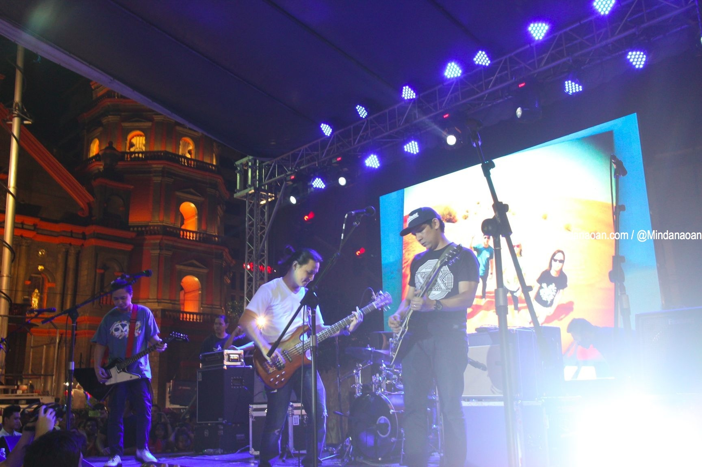

By: Philippine Star |Updated March 26, 2013 - 12:00am
MANILA, Philippines - Rivermaya makes a comeback on the local recording scene with the release of its album Panatang Makabanda, under Universal Records. The album is its first in four years and its first under Universal Records.
Rivermaya is now composed of Mark Escueta, Norby David, Mike Elgar and Ryan Peralta.”
Rivermaya joins the label’s elite roster of bands — Parokya Ni Edgar, Kamikazee, Sponge Cola, Callalily, among others.
“It’s really a great honor for us, not only to become part of such a high-caliber roster, but to be given the chance to work with a company that has always championed the Filipino artist. It took a few weeks for it to really sink in. Di kami makapaniwala,” says founding member Mark. “Finally, we’re ‘home.’”
The album’s single Pilipinas, Kailan Ka Magigising, penned by Mark, is reminder to everyone to go against crab mentality and selfishness, especially now that another national elections is in the horizon.
When asked how the single was chosen among the tracks recorded for Panatang Makabanda, drummer-turned-guitarist Mark quips, “In the early stages of recording, the song became the initial favorite of the group. It’s also a fun song to play live. Maganda yung message ng kanta and very timely since election time na naman tayo. “
Norby adds, “Hopefully, our new record can take the fans to a whole new level and attract more new listeners to our songs and stories. We are all excited for what each of us can bring to the table and soon to your ears.”
When asked to sum up his Rivermaya journey from 1993 to 2013, Mark says, “One of my firm beliefs is that the best part about being a musician is the process. If you enjoy the process, then all your gigs, songs and albums will be celebrations after a great day at the ‘dream office.’ If the process is messed up, many things can go wrong and it can even end up as a painful experience. It has to be good for everybody, not just one or two. Few people know, and I’m sure a lot of my fellow musicians will agree, that one of the most important things that keeps a band going is something that is not so musical in nature. It’s called laughter. A band that laughs together, stays together. Diyan mayaman ang Rivermaya ngayon, tawanan, pagkakaibigan at bagong musika.”